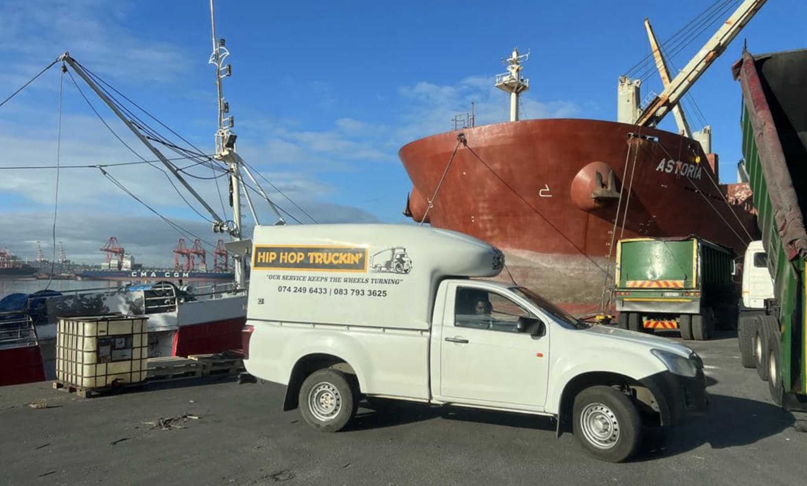

Supply Chain Consulting: Offer expert advice and consulting services to optimize supply chain operations and improve overall efficiency.
Vendor Management: Assist clients in managing relationships with suppliers and vendors for smoother logistics operations.
Industry-Specific Logistics Solutions: Tailor logistics services to cater to specific industries, such as healthcare, automotive, retail, etc.
Local and Regional Freight Solutions: Focus on providing reliable freight and cargo services within a specific geographic area or region.
Same-Day or Next-Day Delivery: Offer expedited delivery options for time-sensitive shipments within a defined local area.
Small-Batch Fulfillment: Assist small businesses with picking, packing, and shipping smaller order quantities efficiently.
Transportation Coordination: Act as a liaison between businesses and transportation carriers, arranging and coordinating shipments on their behalf.
Specialized Cargo Handling: Focus on handling specific types of cargo, such as fragile items, perishables, or hazardous materials.
Consulting and Advisory Services: Provide personalized logistics consulting to help clients improve their supply chain processes and reduce costs.
Personalized Customer Service: Emphasize a high level of customer service, offering personalized attention and support to clients.
Sustainable Logistics Solutions: Highlight eco-friendly practices, such as route optimization to reduce emissions and minimize environmental impact.
Collaboration with Local Carriers: Partner with local carriers to offer a broader range of delivery options.
